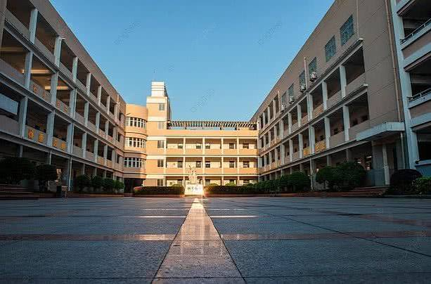

SD
Sebuah Perjalanan Menemukan Diri Memulai perjalanan menuntut ilmu di SD Insan Terpadu adalah babak awal yang penuh cerita dan warna dalam hidup saya. Ketika pertama kali menginjakkan kaki di sekolah ini, saya adalah sosok anak yang sangat pemalu. Sifat pemalu itu hadir bukan tanpa alasan; saya menyadari bahwa saat itu saya jarang berbaur dan canggung jika harus memulai obrolan dengan teman-teman baru.
Namun, dunia persekolahan perlahan mencairkan kekakuan itu. Di tengah rasa minder yang sering muncul, Tuhan mengirimkan sahabat-sahabat yang luar biasa. Walaupun pemalu, saya tetap berhasil memiliki teman-teman yang sangat baik. Mereka adalah orang-orang yang perhatian, hangat, dan selalu suka bercanda, membuat hari-hari di sekolah terasa jauh lebih menyenangkan.
Selama masa SD, rutinitas harian saya selalu ditemani oleh kehangatan orang tua yang setia mengantar jemput setiap hari. Bicara soal jemputan, ada satu kejadian unik yang tidak pernah saya lupakan. Suatu hari, saya menunggu jemputan yang datang lama sekali. Karena sudah tidak sabar dan bosan menunggu, saya akhirnya nekat memutuskan untuk pulang dengan berjalan kaki sendirian. Beruntung, jarak dari sekolah ke rumah tidak terlalu jauh, sehingga saya bisa sampai dengan selamat.
Selain kejadian itu, ada satu momen paling berkesan dan mengundang tawa yang selalu saya ingat sampai sekarang. Saya pernah ketiduran di dalam kelas dengan sangat pulas. Lucunya, saat saya terbangun, ternyata seluruh isi kelas sedang melihat ke arah saya. Tidak ada satu pun dari mereka yang berniat membangunkan saya sebelumnya! Momen memalukan sekaligus jenaka itu menjadi bumbu cerita yang manis.
Di bidang non-akademik, saya juga sempat mengeksplorasi diri lewat kegiatan ekstrakurikuler. Pada kelas 1 hingga 3 SD, saya memilih mengikuti ekskul Taekwondo—meskipun harus jujur diakui, saya cukup sering bolos saat itu. Menginjak kelas 3 hingga 6 SD, saya beralih haluan dan aktif mengikuti ekskul bola voli.
Perjalanan berharga ini mencapai puncaknya di kelas 6. Salah satu pencapaian yang paling saya syukuri adalah ketika saya dinyatakan lulus tes baca Al-Qur'an. Sebenarnya, target saya berikutnya setelah lulus tes adalah melanjutkan ke jenjang menghafal kalam-Nya (tahfidz). Namun sayang, impian mulia tersebut belum sempat kesampaian karena waktu berjalan begitu cepat dan saya keburu lulus dari bangku SD.
Semua memori di SD Insan Terpadu—mulai dari anak pemalu yang diantar orang tua, momen ketiduran di kelas, dinamika ekskul, hingga perjuangan mengaji—telah membentuk siapa saya hari ini. Itu bukan sekadar masa lalu, melainkan sebuah rihlah ilmiah penuh makna yang akan selalu hidup dalam ingatan.